공인중개사-2차 (2018-10-27 기출문제)
1과목: 임의구분
1. 공인중개사법령상 용어의 정의로 틀린 것은?
- 개업공인중개사라 함은 공인중개사 자격을 가지고 중개를 업으로 하는 자를 말한다.
- 중개업이라 함은 다른 사람의 의뢰에 의하여 일정한 보수를 받고 중개를 업으로 행하는 것을 말한다.
- 소속공인중개사라 함은 개업공인중개사에 소속된 공인중개사(개업공인중개사인 법인의 사원 또는 임원으로서 공인중개사인 자 포함)로서 중개업무를 수행하거나 개업공인중개사의 중개업무를 보조하는 자를 말한다.
- 공인중개사라 함은 공인중개사자격을 취득한 자를 말한다.
- 중개라 함은 중개대상물에 대하여 거래당사자간의 매매 ·교환·임대차 그 밖의 권리의 득실변경에 관한 행위를 알선하는 것을 말한다.
(정답률: 66%)

2. 공인중개사법령상 중개대상물에 해당하는 것을 모두 고른 것은? (다툼이 있으면 판례에 따름)
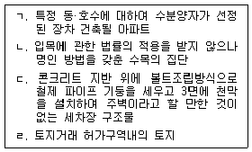
- ㄱ
- ㄱ, ㄹ
- ㄴ, ㄷ
- ㄱ, ㄴ, ㄹ
- ㄴ, ㄷ, ㄹ
(정답률: 61%)
3. 공인중개사법령상 중개사무소 개설등록에 관한 설명으로 틀린 것은? (단, 다른 법률의 규정은 고려하지 않음)
- 법인은 주된 중개사무소를 두려는 지역을 관할하는 등록관청에 중개사무소 개설등록을 해야 한다.
- 대표자가 공인중개사가 아닌 법인은 중개사무소를 개설할 수 없다.
- 법인의 임원 중 공인중개사가 아닌 자도 분사무소의 책임자가 될 수 있다.
- 소속공인중개사는 중개사무소 개설등록을 신청할 수 없다.
- 등록관청은 개설등록을 하고 등록신청을 받은 날부터 7일 이내에 등록신청인에게 서면으로 통지해야 한다.
(정답률: 61%)
4. 공인중개사법령상 중개사무소 개설등록의 결격사유에 해당하는 자를 모두 고른 것은?
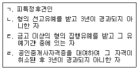
- ㄱ, ㄴ
- ㄱ, ㄷ
- ㄴ, ㄷ
- ㄴ, ㄹ
- ㄷ, ㄹ
(정답률: 61%)
5. 부동산 거래신고 등에 관한 법령상 부동산 거래신고에 관한 설명으로 틀린 것은?
- 지방자치단체가 개업공인중개사의 중개 없이 토지를 매수하는 경우 부동산거래계약 신고서에 단독으로 서명 또는 날인하여 신고관청에 제출해야 한다.
- 개업공인중개사가 공동으로 토지의 매매를 중개하여 거래계약서를 작성·교부한 경우 해당 개업공인중개사가 공동으로 신고해야 한다.
- 매수인은 신고인이 거래신고를 하고 신고필증을 발급받은 때에 부동산등기특별조치법에 따른 검인을 받은 것으로 본다.
- 공공주택 특별법에 따른 공급계약에 의해 부동산을 공급받는 자로 선정된 지위를 매매하는 계약은 부동산 거래신고의 대상이 아니다.
- 매매계약에 조건이나 기한이 있는 경우 그 조건 또는 기한도 신고해야 한다.
(정답률: 31%)
6. 부동산 거래신고 등에 관한 법령상 부동산거래계약 신고서 작성방법으로 틀린 것은?(관련 규정 개정전 문제로 여기서는 기존 정답인 2번을 누르면 정답 처리됩니다. 자세한 내용은 해설을 참고하세요.)
- 거래당사자가 외국인인 경우 거래당사자의 국적을 반드시 기재해야 한다.
- 거래당사자 간 직접거래의 경우 공동으로 신고서에 서명 또는 날인을 하여 공동으로 신고서를 제출해야 한다.
- 자금조달 및 입주 계획란은 투기과열지구에 소재한 주택으로서 실제 거래가격이 3억원 미만인 주택을 거래하는 경우 해당 없음에 √표시를 한다.
- "임대주택 분양전환"은 법인인 임대주택사업자가 임대 기한이 완료되어 분양전환하는 주택인 경우에 √표시를 한다.
- 계약대상 면적에는 실제 거래면적을 계산하여 적되, 건축물 면적은 집합건축물의 경우 전용면적을 적는다.
(정답률: 55%)
7. 공인중개사법령상 국토교통부장관이 공인중개사협회의 공제사업 운영개선을 위하여 명할 수 있는 조치를 모두 고른 것은?
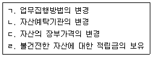
- ㄴ, ㄹ
- ㄱ, ㄴ, ㄷ
- ㄱ, ㄷ, ㄹ
- ㄴ, ㄷ, ㄹ
- ㄱ, ㄴ, ㄷ, ㄹ
(정답률: 55%)
8. 부동산 거래신고 등에 관한 법령상 토지거래계약 허가 신청서에 기재하거나 별지로 제출해야 할 것이 아닌 것은? (단, 농지의 경우는 고려하지 않음)
- 매매의 경우 매도인과 매수인의 성명 및 주소
- 거래를 중개한 개업공인중개사의 성명 및 주소
- 이전 또는 설정하려는 권리의 종류
- 토지이용계획서
- 토지취득자금조달계획서
(정답률: 52%)
9. 부동산 거래신고 등에 관한 법령상 외국인등의 국내 부동산의 취득·보유 등에 관한 설명으로 틀린 것은? (단, 헌법과 법률에 따라 체결된 조약의 이행에 필요한 경우는 고려하지 않음)
- 대한민국 국적을 보유하고 있지 아니한 자가 토지를 증여받은 경우 계약체결일부터 60일 이내에 취득신고를 해야 한다.
- 외국의 법령에 의하여 설립된 법인이 합병을 통하여 부동산을 취득한 경우에는 취득한 날부터 6개월 이내에 취득신고를 해야 한다.
- 부동산을 소유한 대한민국국민이 대한민국 국적을 상실한 경우 부동산을 계속 보유하려면 국적을 상실한 때부터 6개월 이내에 계속보유 신고를 해야 한다.
- 외국정부가 군사기지 및 군사시설 보호법에 따른 군사시설 보호지역 내 토지를 취득하려는 경우 계약체결 전에 국토교통부장관에게 취득허가를 받아야 한다.
- 국제연합의 산하기구가 허가 없이 자연환경보전법상 생태·경관보전지역의 토지를 취득하는 계약을 체결한 경우 그 효력은 발생하지 않는다.
(정답률: 50%)
10. 개업공인중개사가 중개의뢰인에게 상가건물 임대차 계약에 관하여 설명한 내용으로 틀린 것은?
- 임차인은 임차권등기명령의 신청과 관련하여 든 비용을 임대인에게 청구할 수 없다.
- 임대차계약의 당사자가 아닌 이해관계인은 관할 세무서장에게 임대인·임차인의 인적사항이 기재된 서면의 열람을 요청할 수 없다.
- 임대인의 동의를 받고 전대차계약을 체결한 전차인은 임차인의 계약갱신요구권 행사기간 이내에 임차인을 대위하여 임대인에게 계약갱신요구권을 행사할 수 있다.
- 임대차는 그 등기가 없는 경우에도 임차인이 건물의 인도와 법령에 따른 사업자등록을 신청하면 그 다음날부터 제3자에 대하여 효력이 생긴다.
- 차임이 경제사정의 침체로 상당하지 않게 된 경우 당사자는 장래의 차임 감액을 청구할 수 있다.
(정답률: 33%)
11. 공인중개사법령상 법인인 개업공인중개사가 겸업할 수 있는 업무를 모두 고른 것은? (단, 다른 법률의 규정은 고려하지 않음)
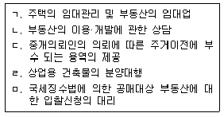
- ㄱ, ㄴ
- ㄷ, ㄹ
- ㄱ, ㄷ, ㅁ
- ㄴ, ㄷ, ㄹ
- ㄴ, ㄹ, ㅁ
(정답률: 56%)
12. 공인중개사법령상 인장의 등록 등에 관한 설명으로 틀린 것은?
- 소속공인중개사는 업무개시 전에 중개행위에 사용할 인장을 등록관청에 등록해야 한다.
- 개업공인중개사가 등록한 인장을 변경한 경우 변경일부터 7일 이내에 그 변경된 인장을 등록관청에 등록해야 한다.
- 법인인 개업공인중개사의 인장 등록은 상업등기규칙에 따른 인감증명서의 제출로 갈음한다.
- 분사무소에서 사용할 인장의 경우에는 상업등기규칙에 따라 법인의 대표자가 보증하는 인장을 등록할 수 있다.
- 법인의 분사무소에서 사용하는 인장은 분사무소 소재지 등록관청에 등록해야 한다.
(정답률: 58%)
13. 공인중개사법령상 등록관청이 공인중개사협회에 통보해야 하는 경우로 틀린 것은?
- 중개사무소등록증을 교부한 때
- 중개사무소등록증을 재교부한 때
- 휴업기간변경신고를 받은 때
- 중개보조원 고용신고를 받은 때
- 업무정지처분을 한 때
(정답률: 53%)
14. 공인중개사법령상 공인중개사의 자격취소에 관한 설명으로 틀린 것은?
- 자격취소처분은 그 자격증을 교부한 시·도지사가 행한다.
- 처분권자가 자격을 취소하려면 청문을 실시해야 한다.
- 자격취소처분을 받아 그 자격증을 반납하고자 하는 자는 그 처분을 받은 날부터 7일 이내에 반납해야 한다.
- 처분권자가 자격취소처분을 한 때에는 5일 이내에 이를 국토교통부장관에게 보고해야 한다.
- 자격증을 교부한 시·도지사와 중개사무소의 소재지를 관할하는 시·도지사가 서로 다른 경우에는 자격증을 교부한 시·도지사가 자격취소처분에 필요한 절차를 이행해야 한다.
(정답률: 53%)
15. 개업공인중개사가 분묘가 있는 토지에 관하여 중개 의뢰인에게 설명한 내용으로 틀린 것은? (다툼이 있으면 판례에 따름)
- 분묘기지권이 성립하기 위해서는 그 내부에 시신이 안장되어 있고, 봉분 등 외부에서 분묘의 존재를 인식할 수 있는 형태를 갖추고 있어야 한다.
- 분묘기지권이 인정되는 분묘가 멸실되었더라도 유골이 존재하여 분묘의 원상회복이 가능하고 일시적인 멸실에 불과하다면 분묘기지권은 소멸하지 않는다.
- 장사 등에 관한 법률의 시행에 따라 그 시행일 이전의 분묘기지권은 존립 근거를 상실하고, 그 이후에 설치된 분묘에는 분묘기지권이 인정되지 않는다.
- 분묘기지권은 분묘의 기지 자체뿐만 아니라 분묘의 설치 목적인 분묘의 수호와 제사에 필요한 범위 내에서 분묘 기지 주위의 공지를 포함한 지역까지 미친다.
- 분묘기지권은 권리자가 의무자에 대하여 그 권리를 포기하는 의사표시를 하는 외에 점유까지도 포기해야만 그 권리가 소멸하는 것은 아니다.
(정답률: 52%)
16. 공인중개사법령상 개업공인중개사가 중개사무소를 등록관청의 관할지역 외의 지역으로 이전하는 경우에 관한 설명으로 틀린 것은?
- 이전신고 전에 발생한 사유로 인한 행정처분은 이전 전의 등록관청이 이를 행한다.
- 이전신고는 이전한 날부터 10일 이내에 해야 한다.
- 주된 사무소의 이전신고는 이전 후 등록관청에 해야 한다.
- 주된 사무소의 이전신고서에는 중개사무소등록증과 건축물대장에 기재된 건물에 중개사무소를 확보한 경우 이를 증명하는 서류가 첨부되어야 한다.
- 분사무소 이전신고를 받은 등록관청은 이전 전 및 이전 후의 분사무소 소재지 관할 시장·군수 또는 구청장에게 이를 지체 없이 통보해야 한다.
(정답률: 52%)
17. 공인중개사법령상 중개사무소 명칭 및 표시·광고에 관한 설명으로 옳은 것은?
- 공인중개사는 개설등록을 하지 않아도 그 사무소에 "부동산중개"라는 명칭을 사용할 수 있다.
- 공인중개사인 개업공인중개사가 법령에 따른 옥외광고물을 설치하는 경우 중개사무소등록증에 표기된 개업공인중개사의 성명을 표기할 필요가 없다.
- 법 제7638호 부칙 제6조 제2항에 규정된 개업공인중개사는 사무소의 명칭에 "공인중개사사무소"라는 문자를 사용해서는 안 된다.
- 등록관청은 규정을 위반한 사무소 간판의 철거를 명할 수 있으나, 법령에 의한 대집행은 할 수 없다.
- 법인인 개업공인중개사가 의뢰받은 중개대상물에 대하여 법령에 따른 표시·광고를 하는 경우 대표자의 성명을 명시할 필요는 없다.
(정답률: 56%)
18. 공인중개사법령상 개업공인중개사의 휴업에 관한 설명으로 틀린 것을 모두 고른 것은?
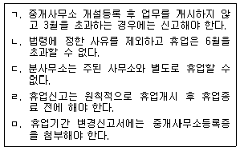
- ㄱ, ㄴ
- ㄷ, ㅁ
- ㄱ, ㄴ, ㄹ
- ㄴ, ㄷ, ㅁ
- ㄷ, ㄹ, ㅁ
(정답률: 52%)
19. 개업공인중개사가 중개의뢰인에게 주택임대차보호법을 설명한 내용으로 틀린 것은?
- 임차인이 임차주택에 대하여 보증금반환청구소송의 확정 판결에 따라 경매를 신청하는 경우 반대의무의 이행이나 이행의 제공을 집행개시의 요건으로 하지 아니한다.
- 임차권등기명령의 집행에 따른 임차권등기가 끝난 주택을 그 이후에 임차한 임차인은 보증금 중 일정액을 다른 담보물권자보다 우선하여 변제받을 권리가 없다.
- 임대차계약을 체결하려는 자는 임차인의 동의를 받아 확정일자부여기관에 해당 주택의 확정일자 부여일 정보의 제공을 요청할 수있다.
- 임차인이 상속인 없이 사망한 경우 그 주택에서 가정공동생활을 하던 사실상의 혼인 관계에 있는 자가 임차인의 권리와 의무를 승계한다.
- 주택의 등기를 하지 아니한 전세계약에 관하여는 주택임대차보호법을 준용한다.
(정답률: 24%)
20. 개업공인중개사 甲의 소속공인중개사 乙이 중개업무를 하면서 중개대상물의 거래상 중요사항에 관하여 거짓된 언행으로 중개의뢰인 丙의 판단을 그르치게 하여 재산상 손해를 입혔다. 공인중개사법령에 관한 설명으로 틀린 것은?
- 乙의 행위는 공인중개사 자격정지 사유에 해당한다.
- 乙은 1년 이하의 징역 또는 1천만원 이하의 벌금에 처한다.
- 등록관청은 甲의 중개사무소 개설등록을 취소할 수 있다.
- 乙이 징역 또는 벌금형을 선고받은 경우 甲은 乙의 위반행위 방지를 위한 상당한 주의·감독을 게을리 하지 않았더라도 벌금형을 받는다.
- 丙은 甲에게 손해배상을 청구할 수 있다.
(정답률: 50%)
21. 공인중개사의 매수신청대리인 등록 등에 관한 규칙에 따라 매수신청대리인으로 등록한 甲에 관한 설명으로 틀린 것은?
- 甲은 공인중개사인 개업공인중개사이거나 법인인 개업공인중개사이다.
- 매수신청대리의 위임을 받은 甲은 민사집행법에 따른 공유자의 우선매수신고를 할 수 있다.
- 폐업신고를 하여 매수신청대리인 등록이 취소된 후 3년이 지나지 않은 甲은 매수신청대리인 등록을 할 수 없다.
- 甲의 공인중개사 자격이 취소된 경우 지방법원장은 매수신청대리인 등록을 취소해야 한다.
- 甲은 매수신청대리권의 범위에 해당하는 대리행위를 할 때 매각장소 또는 집행법원에 직접 출석해야 한다.
(정답률: 41%)
22. 공인중개사법령상 개업공인중개사 甲의 중개대상물 확인·설명에 관한 내용으로 틀린 것은? (다툼이 있으면 판례에 따름)
- 甲은 중개가 완성되어 거래계약서를 작성하는 때에는 중개대상물 확인·설명서를 작성해야 한다.
- 甲은 작성된 중개대상물 확인·설명서를 거래당사자 모두에게 교부해야 한다.
- 甲은 중개보수 및 실비의 금액과 그 산출내역을 확인·설명해야 한다.
- 甲은 임대의뢰인이 중개대상물의 상태에 관한 자료요구에 불응한 경우 그 사실을 중개대상물 확인·설명서에 기재할 의무가 없다.
- 甲은 상가건물의 임차권 양도계약을 중개할 경우 양수의뢰인이 상가건물 임대차보호법에서 정한 대항력, 우선변제권 등의 보호를 받을 수 있는지를 확인·설명할 의무가 있다.
(정답률: 55%)
23. 공인중개사법령상 개업공인중개사의 중개보수 등에 관한 설명으로 틀린 것은?
- 중개대상물의 권리관계 등의 확인에 소요되는 실비를 받을 수 있다.
- 다른 약정이 없는 경우 중개보수의 지급시기는 중개대상물의 거래대금 지급이 완료된 날로 한다.
- 주택 외의 중개대상물에 대한 중개보수는 국토교통부령으로 정하고, 중개의뢰인 쌍방에게 각각 받는다.
- 개업공인중개사의 고의 또는 과실로 중개의뢰인 간의 거래 행위가 해제된 경우 중개보수를 받을 수 없다.
- 중개대상물인 주택 소재지와 중개사무소 소재지가 다른 경우 주택 소재지를 관할하는 시·도 조례에서 정한 기준에 따라 중개보수를 받아야 한다.
(정답률: 56%)
24. 공인중개사법령상 중개대상물 확인·설명서[II](비주거용 건축물)에서 개업공인중개사의 확인사항으로 옳은 것을 모두 고른 것은?
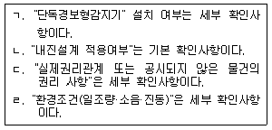
- ㄱ, ㄴ
- ㄱ, ㄹ
- ㄴ, ㄷ
- ㄱ, ㄴ, ㄷ
- ㄴ, ㄷ, ㄹ
(정답률: 39%)
25. 공인중개사법령상 일방으로부터 받을 수 있는 중개보수의 한도 및 거래금액의 계산 등에 관한 설명으로 틀린 것은? (다툼이 있으면 판례에 따름)
- 주택의 임대차에 대한 중개보수는 거래금액의 1천분의 8이내의 한도에서 시·도 조례로 정한다.
- 아파트 분양권의 매매를 중개한 경우 당사자가 거래 당시 수수하게 되는 총 대금(통상적으로 계약금, 기 납부한 중도금, 프리미엄을 합한 금액)을 거래가액으로 보아야 한다.
- 교환계약의 경우 거래금액은 교환대상 중개대상물 중 거래금액이 큰 중개대상물의 가액으로 한다.
- 중개대상물인 건축물 중 주택의 면적이 2분의 1이상인 건축물은 주택의 중개보수 규정을 적용한다.
- 전용면적이 85제곱미터 이하이고, 상·하수도 시설이 갖추어진 전용입식 부엌, 전용수세식 화장실 및 목욕시설을 갖춘 오피스텔의 임대차에 대한 중개보수의 상한요율은 거래금액의 1천분의 5이다.
(정답률: 48%)
26. 공인중개사법령상 개업공인중개사등의 교육에 관한 설명으로 옳은 것을 모두 고른 것은? (단, 다른 법률의 규정은 고려하지 않음)
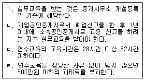
- ㄱ, ㄴ
- ㄱ, ㄹ
- ㄴ, ㄷ
- ㄱ, ㄷ, ㄹ
- ㄴ, ㄷ, ㄹ
(정답률: 47%)
27. 공인중개사법령상 중개계약에 관한 설명으로 틀린 것은? (다툼이 있으면 판례에 따름)
- 임대차에 대한 전속중개계약을 체결한 개업공인중개사는 중개대상물의 공시지가를 공개해야 한다.
- 부동산중개계약은 민법상 위임계약과 유사하다.
- 전속중개계약은 법령이 정하는 계약서에 의하여야 하며, 중개의뢰인과 개업공인중개사가 모두 서명 또는 날인한다.
- 개업공인중개사는 전속중개계약 체결 후 중개의뢰인에게 2주일에 1회 이상 중개업무 처리상황을 문서로 통지해야 한다.
- 중개의뢰인은 일반중개계약을 체결할 때 일반중개계약서의 작성을 요청할 수 있다.
(정답률: 47%)
28. 공인중개사법령상 개업공인중개사의 손해배상책임의 보장에 관한 설명으로 틀린 것은? (다툼이 있으면 판례에 따름)
- 개업공인중개사등이 아닌 제3자의 중개행위로 거래당사자에게 재산상 손해가 발생한 경우 그 제3자는 이 법에 따른 손해배상책임을 진다.
- 부동산 매매계약을 중개하고 계약금 및 중도금 지급에도 관여한 개업공인중개사가 잔금 중 일부를 횡령한 경우 이 법에 따른 손해배상책임이 있다.
- 개업공인중개사는 업무를 개시하기 전에 손해배상책임을 보장하기 위하여 법령이 정한 조치를 하여야 한다.
- 개업공인중개사가 자기의 중개사무소를 다른 사람의 중개행위 장소로 제공함으로써 거래당사자에게 재산상 손해가 발생한 경우 그 손해를 배상할 책임이 있다.
- 손해배상책임의 보장을 위한 공탁금은 개업공인중개사가 폐업 또는 사망한 날부터 3년 이내에는 회수할 수 없다.
(정답률: 47%)
29. 개업공인중개사가 중개의뢰인에게 민사집행법에 따른 부동산경매에 관하여 설명한 내용으로 옳은 것을 모두 고른 것은?
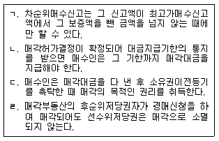
- ㄱ
- ㄴ
- ㄱ, ㄷ
- ㄴ, ㄹ
- ㄷ, ㄹ
(정답률: 27%)
30. 공인중개사법령상 개업공인중개사의 금지행위에 관한 설명으로 틀린 것은? (다툼이 있으면 판례에 따름)
- 중개대상물의 매매를 업으로 하는 행위는 금지행위에 해당한다.
- 아파트의 특정 동·호수에 대한 분양계약이 체결된 후 그 분양권의 매매를 중개한 것은 금지행위에 해당하지 않는다.
- 상가 전부의 매도 시에 사용하려고 매각조건 등을 기재하여 인쇄해 놓은 양식에 매매대금과 지급기일 등 해당 사항을 기재한 분양계약서는 양도·알선 등이 금지된 부동산의 분양 등과 관련 있는 증서에 해당하지 않는다.
- 개업공인중개사가 중개의뢰인과 직접 거래를 하는 행위를 금지하는 규정은 효력규정이다.
- 탈세 등 관계 법령을 위반할 목적으로 미등기 부동산의 매매를 중개하여 부동산투기를 조장하는 행위는 금지행위에 해당한다.
(정답률: 46%)
31. 공인중개사법령상 개업공인중개사의 거래계약서 작성 등에 관한 설명으로 틀린 것은?
- 거래계약서에는 물건의 인도일시를 기재해야 한다.
- 공인중개사법 시행규칙에 개업공인중개사가 작성하는 거래계약서의 표준이 되는 서식이 정해져 있다.
- 거래계약서에는 중개대상물 확인·설명서 교부일자를 기재해야 한다.
- 소속공인중개사가 중개행위를 한 경우 그 거래계약서에는 소속공인중개사와 개업공인중개사가 함께 서명 및 날인해야 한다.
- 공동중개의 경우 참여한 개업공인중개사가 모두 서명 및 날인해야 한다.
(정답률: 50%)
32. 개업공인중개사 甲은 중개업무를 하면서 법정한도를 초과하는 중개보수를 요구하여 수령하였다. 공인중개사법령상 甲의 행위에 관한 설명으로 틀린 것은? (다툼이 있으면 판례에 따름)
- 등록관청은 甲에게 업무의 정지를 명할 수 있다.
- 등록관청은 甲의 중개사무소 개설등록을 취소할 수 있다.
- 1년 이하의 징역 또는 1천만원 이하의 벌금 사유에 해당한다.
- 법정한도를 초과하는 중개보수 약정은 그 한도를 초과하는 범위 내에서 무효이다.
- 甲이 법정한도를 초과하는 금액을 중개의뢰인에게 반환하였다면 금지행위에 해당하지 않는다.
(정답률: 50%)
33. 공인중개사법령상 중개업무를 수행하는 소속공인중개사의 자격정지사유에 해당하지 않는 것은?
- 하나의 거래에 대하여 서로 다른 2이상의 거래계약서를 작성한 경우
- 국토교통부령이 정하는 전속중개계약서에 의하지 않고 전속중개계약을 체결한 경우
- 성실·정확하게 중개대상물의 확인·설명을 하지 않은 경우
- 거래계약서에 거래금액 등 거래내용을 거짓으로 기재한 경우
- 2이상의 중개사무소에 소속공인중개사로 소속된 경우
(정답률: 45%)
34. 공인중개사법령상 ( )에 들어갈 내용으로 옳은 것은?
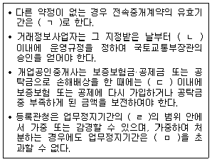
- ㄱ: 3월, ㄴ: 3월, ㄷ: 15일, ㄹ: 2분의 1, ㅁ: 6월
- ㄱ: 3월, ㄴ: 3월, ㄷ: 15일, ㄹ: 3분의 1, ㅁ: 6월
- ㄱ: 3월, ㄴ: 6월, ㄷ: 1월, ㄹ: 2분의 1, ㅁ: 1년
- ㄱ: 6월, ㄴ: 3월, ㄷ: 15일, ㄹ: 3분의 1, ㅁ: 6월
- ㄱ: 6월, ㄴ: 6월, ㄷ: 1월, ㄹ: 2분의 1, ㅁ: 1년
(정답률: 52%)
35. 공인중개사법령상 1년 이하의 징역 또는 1천만원 이하의 벌금에 해당하지 않는 자는?
- 공인중개사가 아닌 자로서 공인중개사 또는 이와 유사한 명칭을 사용한 자
- 개업공인중개사가 아닌 자로서 중개업을 하기 위하여 중개대상물에 대한 표시·광고를 한 자
- 개업공인중개사가 아닌 자로서 "공인중개사사무소", "부동산중개" 또는 이와 유사한 명칭을 사용한 자
- 관계 법령에서 양도·알선 등이 금지된 부동산의 분양·임대 등과 관련 있는 증서 등의 매매·교환 등을 중개한 개업공인중개사
- 다른 사람에게 자기의 상호를 사용하여 중개업무를 하게 한 개업공인중개사
(정답률: 49%)
36. 공인중개사법령상 개업공인중개사의 업무정지 사유이면서 중개행위를 한 소속공인중개사의 자격정지 사유에 해당하는 것을 모두 고른 것은?
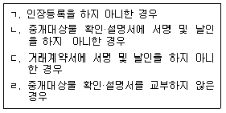
- ㄱ, ㄴ
- ㄷ, ㄹ
- ㄱ, ㄴ, ㄷ
- ㄴ, ㄷ, ㄹ
- ㄱ, ㄴ, ㄷ, ㄹ
(정답률: 37%)
37. 공인중개사법령상 행정제재처분효과의 승계 등에 관한 설명으로 옳은 것은?
- 폐업기간이 13개월인 재등록 개업공인중개사에게 폐업 신고 전의 업무정지사유에 해당하는 위반행위에 대하여 업무정지처분을 할 수 있다.
- 폐업신고 전에 개업공인중개사에게 한 업무정지처분의 효과는 그 처분일부터 3년간 재등록 개업공인중개사에게 승계된다.
- 폐업기간이 3년 6개월인 재등록 개업공인중개사에게 폐업신고 전의 중개사무소 개설등록 취소사유에 해당하는 위반행위를 이유로 개설등록취소처분을 할 수 있다.
- 폐업신고 전에 개업공인중개사에게 한 과태료부과처분의 효과는 그 처분일부터 9개월된 때에 재등록을 한 개업공인중개사에게 승계된다.
- 재등록 개업공인중개사에 대하여 폐업신고 전의 개설등록취소에 해당하는 위반행위를 이유로 행정처분을 할 때 폐업의 사유는 고려하지 않는다.
(정답률: 44%)
38. 공인중개사법령상 등록관청이 인지하였다면 공인중개사인 개업공인중개사 甲의 중개사무소 개설등록을 취소하여야 하는 경우에 해당하지 않는 것은?
- 甲이 2018년 9월 12일에 사망한 경우
- 공인중개사법령을 위반한 甲에게 2019년 9월 12일에 400만원 벌금형이 선고되어 확정된 경우
- 甲이 2018년 9월 12일에 배임죄로 징역 1년, 집행유예 1년 6월이 선고되어 확정된 경우
- 甲이 최근 1년 이내에 공인중개사 법령을 위반하여 1회 업무정지처분, 2회 과태료처분을 받고 다시 업무정지처분에 해당하는 행위를 한 경우
- 甲이 2018년 9월 12일에 다른 사람에게 자기의 성명을 사용하여 중개업무를 하게 한 경우
(정답률: 46%)
39. 공인중개사법령상 과태료 부과대상자와 부과기관의 연결이 틀린 것은?
- 공제사업 운용실적을 공시하지 아니한 자 - 국토교통부장관
- 공인중개사협회의 임원에 대한 징계·해임의 요구를 이행하지 아니한 자 - 국토교통부장관
- 연수교육을 정당한 사유 없이 받지 아니한 자 - 등록관청
- 휴업기간의 변경 신고를 하지 아니한 자 - 등록관청
- 성실·정확하게 중개대상물의 확인·설명을 하지 아니한 자 - 등록관청
(정답률: 46%)
40. 개업공인중개사가 농지법에 대하여 중개의뢰인에게 설명한 내용으로 틀린 것은? (다툼이 있으면 판례에 따름)
- 경매로 농지를 매수하려면 매수신청 시에 농지자격취득 증명서를 제출해야 한다.
- 개인이 소유하는 임대 농지의 양수인은 농지법에 따른 임대인의 지위를 승계한 것으로 본다.
- 농지전용협의를 마친 농지를 취득하려는 자는 농지취득자격증명을 발급받을 필요가 없다.
- 농지를 취득하려는 자가 농지에 대한 매매계약을 체결하는 등으로 농지에 관한 소유권이전등기청구권을 취득하였다면, 농지취득자격증명 발급신청권을 보유하게 된다.
- 주말·체험영농을 목적으로 농지를 소유하려면 세대원 전부가 소유하는 총 면적이 1천제곱미터 미만이어야 한다.
(정답률: 40%)
2과목: 임의구분
41. 국토의 계획 및 이용에 관한 법령상 도시·군관리계획을 시행하기 위한 사업으로 도시·군계획사업에 해당하는 것을 모두 고른 것은?(오류 신고가 접수된 문제입니다. 반드시 정답과 해설을 확인하시기 바랍니다.)
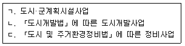
- ㄱ
- ㄱ, ㄴ
- ㄱ, ㄷ
- ㄴ, ㄷ
- ㄱ, ㄴ, ㄷ
(정답률: 45%)
42. 국토의 계획 및 이용에 관한 법령상 광역도시계획에 관한 설명으로 틀린 것은?
- 중앙행정기관의 장, 시·도지사, 시장 또는 군수는 국토교통부장관이나 도지사에게 광역계획권의 변경을 요청할 수 있다.
- 둘 이상의 특별시·광역시·특별자치시·특별자치도·시 또는 군의 공간구조 및 기능을 상호 연계시키고 환경을 보전하며 광역시설을 체계적으로 정비하기 위하여 필요한 경우에는 광역계획권을 지정할 수 있다.
- 국가계획과 관련된 광역도시계획의 수립이 필요한 경우 광역도시계획의 수립권자는 국토교통부장관이다.
- 광역계획권이 둘 이상의 시·도의 관할 구역에 걸쳐 있는 경우에는 관할 시·도지사가 공동으로 광역계획권을 지정하여야 한다.
- 국토교통부장관, 시·도지사, 시장 또는 군수는 광역도시계획을 수립하려면 미리 공청회를 열어 주민과 관계 전문가 등으로부터 의견을 들어야 한다.
(정답률: 39%)
43. 국토의 계획 및 이용에 관한 법령상 도시지역 외 지구단위계획구역에서 지구단위계획에 의한 건폐율 등의 완화적용에 관한 설명으로 틀린 것은?
- 당해 용도지역 또는 개발진흥지구에 적용되는 건폐율의 150퍼센트 이내에서 건폐율을 완화하여 적용할 수 있다.
- 당해 용도지역 또는 개발진흥지구에 적용되는 용적률의 200퍼센트 이내에서 용적률을 완화하여 적용할 수 있다.
- 당해 용도지역에 적용되는 건축물높이의 120퍼센트 이내에서 높이제한을 완화하여 적용할 수 있다.
- 계획관리지역에 지정된 개발진흥지구 내의 지구단위계획구역에서는 건축물의 용도·종류 및 규모 등을 완화하여 적용할 수 있다.
- 계획관리지역 외의 지역에 지정된 개발진흥지구 내의 지구단위계획구역에서는 건축물의 용도·종류 및 규모 등을 완화하여 적용할 경우 아파트 및 연립주택은 허용되지 아니한다.
(정답률: 36%)
44. 국토의 계획 및 이용에 관한 법령상 도시지역에서 입지규제최소구역으로 지정할 수 있는 지역에 해당하지 않는 것은?
- 도시·군기본계획에 따른 도심·부도심 또는 생활권의 중심지역
- 철도역사, 터미널 등의 기반시설 중 지역의 거점 역할을 수행하는 시설을 중심으로 주변지역을 집중적으로 정비할 필요가 있는 지역
- 세 개 이상의 노선이 교차하는 대중교통 결절지로부터 1킬로미터 이내에 위치한 지역
- 「도시 및 주거환경정비법 」에 따른 노후·불량건축물이 밀집한 주거지역 또는 공업지역으로 정비가 시급한 지역
- 「도시재생 활성화 및 지원에 관한 특별법 」 에 따른 도시재생활성화지역 중 근린재생형 활성화계획을 수립하는 지역
(정답률: 31%)
45. 국토의 계획 및 이용에 관한 법령상 도시·군계획시설에 관한 설명으로 옳은 것은?
- 「도시개발법」에 따른 도시개발구역이 200만제곱미터를 초과하는 경우 해당 구역에서 개발사업을 시행하는 자는 공동구를 설치하여야 한다.
- 공동구관리자는 10년마다 해당 공동구의 안전 및 유지관리계획을 수립·시행하여야 한다.
- 도시·군계획시설 부지의 매수 청구시 매수의무자가 매수하지 아니하기로 결정한 날부터 1년이 경과하면 토지 소유자는 해당 용도지역에서 허용되는 건축물을 건축할 수 있다.
- 도시·군계획시설 부지로 되어 있는 토지의 소유자는 도시·군계획시설결정의 실효시까지 그 토지의 도시·군계획시설결정 해제를 위한 도시·군관리계획 입안을 신청할 수 없다.
- 도시·군계획시설에 대해서 시설결정이 고시된 날부터 10년이 지날 때까지 도시·군계획시설사업이 시행되지 아니한 경우 그 도시·군계획시설의 결정은 효력을 잃는다.
(정답률: 40%)
46. 국토의 계획 및 이용에 관한 법령상 성장관리방안을 수립할 수 있는 지역에 해당하지 않는 것은?
- 주변지역과 연계하여 체계적인 관리가 필요한 주거지역
- 개발수요가 많아 무질서한 개발이 진행되고 있는 계획관리지역
- 개발수요가 많아 무질서한 개발이 진행될 것으로 예상되는 생산관리지역
- 주변의 토지이용 변화 등으로 향후 시가화가 예상되는 농림지역
- 교통여건 변화 등으로 향후 시가화가 예상되는 자연환경보전지역
(정답률: 32%)
47. 국토의 계획 및 이용에 관한 법령상 아파트를 건축할 수 있는 용도지역은?
- 계획관리지역
- 일반공업지역
- 유통상업지역
- 제1종일반주거지역
- 제2종전용주거지역
(정답률: 40%)
48. 국토의 계획 및 이용에 관한 법령상 주민이 도시·군관리계획의 입안을 제안하려는 경우 요구되는 제안 사항별 토지소유자의 동의 요건으로 틀린 것은? (단, 동의 대상 토지 면적에서 국·공유지는 제외함)
- 기반시설의 설치에 관한 사항: 대상 토지 면적의 5분의 4 이상
- 기반시설의 정비에 관한 사항: 대상 토지 면적의 3분의 2 이상
- 지구단위계획구역의 지정과 지구단위계획의 수립에 관한 사항: 대상 토지 면적의 3분의 2 이상
- 산업·유통개발진흥지구의 지정에 관한 사항: 대상 토지 면적의 3분의 2 이상
- 용도지구 중 해당 용도지구에 따른 건축물이나 그 밖의 시설의 용도·종류 및 규모 등의 제한을 지구단위계획으로 대체하기 위한 용도지구의 지정에 관한 사항: 대상 토지 면적의 3분의 2 이상
(정답률: 35%)
49. 국토의 계획 및 이용에 관한 법령상 개발밀도관리구역 및 기반시설부담구역에 관한 설명으로 옳은 것은?
- 개발밀도관리구역에서는 당해 용도지역에 적용되는 건폐율 또는 용적률을 강화 또는 완화하여 적용할 수 있다.
- 군수가 개발밀도관리구역을 지정하려면 지방도시계획위원회의 심의를 거쳐 도지사의 승인을 받아야 한다.
- 주거·상업지역에서의 개발행위로 기반시설의 수용능력이 부족할 것으로 예상되는 지역 중 기반시설의 설치가 곤란한 지역은 기반시설부담구역으로 지정할 수 있다.
- 시장은 기반시설부담구역을 지정하면 기반시설설치계획을 수립하여야 하며, 이를 도시관리계획에 반영하여야 한다.
- 기반시설부담구역에서 개발행위를 허가받고자 하는 자에게는 기반시설설치비용을 부과하여야 한다.
(정답률: 33%)
50. 국토의 계획 및 이용에 관한 법령상 용도지구안에서의 건축제한 등에 관한 설명으로 틀린 것은? (단, 건축물은 도시·군계획시설이 아니며, 조례는 고려하지 않음)
- 지구단위계획 또는 관계 법률에 따른 개발계획을 수립하지 아니하는 개발진흥지구에서는 개발진흥지구의 지정목적 범위에서 해당 용도지역에서 허용되는 건축물을 건축할 수 있다.
- 고도지구 안에서는 도시·군관리계획으로 정하는 높이를 초과하는 건축물을 건축할 수 없다.
- 일반주거지역에 지정된 복합용도지구 안에서는 장례시설을 건축할 수 있다.
- 방재지구 안에서는 용도지역 안에서의 층수 제한에 있어 1층 전부를 필로티 구조로 하는 경우 필로티 부분을 층수에서 제외한다.
- 자연취락지구 안에서는 4층 이하의 방송통신시설을 건축할 수 있다.
(정답률: 32%)
51. 국토의 계획 및 이용에 관한 법령상 도시·군계획조례로 정할 수 있는 건폐율의 최대한도가 다음 중 가장 큰 지역은?
- 자연환경보전지역에 있는「자연공원법」에 따른 자연공원
- 계획관리지역에 있는「산업입지 및 개발에 관한 법률」에 따른 농공단지
- 수산자원보호구역
- 도시지역 외의 지역에 지정된 개발진흥지구
- 자연녹지지역에 지정된 개발진흥지구
(정답률: 37%)
52. 국토의 계획 및 이용에 관한 법령상 도시·군관리계획의 결정권자가 다른 것은? (문제 오류로 실제 시험에서는 모두 정답처리 되었습니다. 여기서는 1번을 누르면 정답 처리 됩니다.)
- 개발제한구역의 지정에 관한 도시·군관리계획
- 도시자연공원구역의 지정에 관한 도시·군관리계획
- 입지규제최소구역의 지정에 관한 도시·군관리계획
- 국가계획과 연계하여 시가화조정구역의 지정이 필요한 경우 시가화조정구역의 지정에 관한 도시·군관리계획
- 둘 이상의 시·도에 걸쳐 이루어지는 사업의 계획 중 도시·군관리계획으로 결정하여야 할 사항이 있는 경우 국토교통부장관이 입안한 도시·군관리계획
(정답률: 32%)
53. 도시개발법령상 도시개발구역으로 지정할 수 있는 대상 지역 및 규모에 관하여 ( )에 들어갈 숫자를 바르게 나열한 것은?
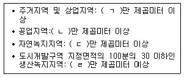
- ㄱ: 1, ㄴ: 1, ㄷ: 1, ㄹ: 3
- ㄱ: 1, ㄴ: 3, ㄷ: 1, ㄹ: 1
- ㄱ: 1, ㄴ: 3, ㄷ: 3, ㄹ: 1
- ㄱ: 3, ㄴ: 1, ㄷ: 3, ㄹ: 3
- ㄱ: 3, ㄴ: 3, ㄷ: 1, ㄹ: 1
(정답률: 37%)
54. 도시개발법령상 도시개발사업의 시행에 관한 설명으로 옳은 것은?
- 국가는 도시개발사업의 시행자가 될 수 없다.
- 한국철도공사는 「역세권의 개발 및 이용에 관한 법률」에 따른 역세권개발사업을 시행하는 경우에만 도시개발 사업의 시행자가 된다.
- 지정권자는 시행자가 도시개발사업에 관한 실시계획의 인가를 받은 후 2년 이내에 사업을 착수하지 아니하는 경우 시행자를 변경할 수 있다.
- 토지 소유자가 도시개발구역의 지정을 제안하려는 경우에는 대상 구역 토지면적의 2분의 1 이상에 해당하는 토지 소유자의 동의를 받아야 한다.
- 사업주체인 지방자치단체는 조성된 토지의 분양을 「주택법」에 따른 주택건설사업자에게 대행하게 할 수 없다.
(정답률: 31%)
55. 도시개발법령상 도시개발사업을 위하여 설립하는 조합에 관한 설명으로 옳은 것은?
- 조합을 설립하려면 도시개발구역의 토지 소유자 7명 이상이 국토교통부장관에게 조합 설립의 인가를 받아야 한다.
- 조합이 인가받은 사항 중 주된 사무소의 소재지를 변경하려는 경우 변경인가를 받아야 한다.
- 조합 설립의 인가를 신청하려면 해당 도시개발구역의 토지면적의 2분의 1 이상에 해당하는 토지 소유자와 그 구역의 토지 소유자 총수의 3분의 2 이상의 동의를 받아야 한다.
- 금고 이상의 형을 선고받고 그 집행이 끝나지 아니한 자는 조합원이 될 수 없다.
- 의결권을 가진 조합원의 수가 100인인 조합은 총회의 권한을 대행하게 하기 위하여 대의원회를 둘 수 있다.
(정답률: 34%)
56. 도시개발법령상 도시개발사업의 실시계획에 관한 설명으로 옳은 것은?
- 지정권자인 국토교통부장관이 실시계획을 작성하는 경우 시장·군수 또는 구청장의 의견을 미리 들어야 한다.
- 도시개발사업을 환지방식으로 시행하는 구역에 대하여 지정권자가 실시계획을 작성한 경우에는 사업의 명칭·목적, 도시·군관리계획의 결정내용을 관할 등기소에 통보·제출하여야 한다.
- 실시계획을 인가할 때 지정권자가 해당 실시계획에 대한 「하수도법」에 따른 공공하수도 공사시행의 허가에 관하여 관계 행정기관의 장과 협의한 때에는 해당 허가를 받은 것으로 본다.
- 인가를 받은 실시계획 중 사업시행면적의 100분의 20이 감소된 경우 지정권자의 변경인가를 받을 필요가 없다.
- 지정권자는 시행자가 도시개발구역 지정의 고시일부터 6개월 이내에 실시계획의 인가를 신청하지 아니하는 경우 시행자를 변경할 수 있다.
(정답률: 34%)
57. 도시개발법령상 환지 방식에 의한 사업 시행에 관한 설명으로 틀린 것은?
- 시행자는 환지 방식이 적용되는 도시개발구역에 있는 조성토지등의 가격을 평가할 때에는 토지평가협의회의 심의를 거쳐 결정하되, 그에 앞서 감정평가업자가 평가하게 하여야 한다.
- 행정청이 아닌 시행자가 환지 계획을 작성한 경우에는 특별자치도지사·시장·군수 또는 구청장의 인가를 받아야 한다.
- 행정청인 시행자가 환지 계획을 정하려고 하는 경우에 해당 토지의 임차권자는 공람기간에 시행자에게 의견서를 제출할 수 있다.
- 환지 계획에서 정하여진 환지는 그 환지처분이 공고된 날의 다음 날부터 종전의 토지로 본다.
- 환지설계시 적용되는 토지·건축물의 평가액은 최초 환지계획인가 신청 시를 기준으로 하여 정하되, 환지 계획의 변경인가를 받아 변경할 수 있다.
(정답률: 17%)
58. 도시개발법령상 도시개발채권에 관한 설명으로 옳은 것은?
- 도시개발채권의 매입의무자가 아닌 자가 착오로 도시개발채권을 매입한 경우에는 도시개발채권을 중도에 상환할 수 있다.
- 시·도지사는 도시개발채권을 발행하려는 경우 채권의 발행총액에 대하여 국토교통부장관의 승인을 받아야 한다.
- 도시개발채권의 상환은 3년부터 10년까지의 범위에서 지방자치단체의 조례로 정한다.
- 도시개발채권의 소멸시효는 상환일부터 기산하여 원금은 3년, 이자는 2년으로 한다.
- 도시개발채권 매입필증을 제출받는 자는 매입필증을 3년간 보관하여야 한다.
(정답률: 34%)
59. 도시 및 주거환경정비법령상 도시·주거환경정비기본계획(이하 '기본계획'이라 함)의 수립에 관한 설명으로 틀린 것은?
- 도지사가 대도시가 아닌 시로서 기본계획을 수립할 필요가 없다고 인정하는 시에 대하여는 기본계획을 수립하지 아니할 수 있다.
- 국토교통부장관은 기본계획에 대하여 5년마다 타당성 여부를 검토하여 그 결과를 기본계획에 반영하여야 한다.
- 기본계획의 수립권자는 기본계획을 수립하려는 경우 15일 이상 주민에게 공람하여 의견을 들어야 한다.
- 기본계획에는 사회복지시설 및 주민문화시설 등의 설치 계획이 포함되어야 한다.
- 대도시의 시장이 아닌 시장은 기본계획의 내용 중 정비사업의 계획기간을 단축하는 경우 도지사의 변경승인을 받지 아니할 수 있다.
(정답률: 17%)
60. 도시 및 주거환경정비법령상 조합설립 등에 관하여 ( )에 들어갈 내용을 바르게 나열한 것은?
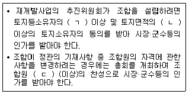
- ㄱ: 3분의 2, ㄴ: 3분의 1, ㄷ: 3분의 2
- ㄱ: 3분의 2, ㄴ: 2분의 1, ㄷ: 과반수
- ㄱ: 4분의 3, ㄴ: 3분의 1, ㄷ: 과반수
- ㄱ: 4분의 3, ㄴ: 2분의 1, ㄷ: 3분의 2
- ㄱ: 4분의 3, ㄴ: 3분의 2, ㄷ: 과반수
(정답률: 28%)
61. 도시 및 주거환경정비법령상 사업시행자가 인가받은 관리처분계획을 변경하고자 할 때 시장·군수등에게 신고하여야 하는 경우가 아닌 것은?
- 사업시행자의 변동에 따른 권리·의무의 변동이 있는 경우로서 분양설계의 변경을 수반하지 아니하는 경우
- 재건축사업에서의 매도청구에 대한 판결에 따라 관리처분계획을 변경하는 경우
- 주택분양에 관한 권리를 포기하는 토지등소유자에 대한 임대주택의 공급에 따라 관리처분계획을 변경하는 경우
- 계산착오·오기·누락 등에 따른 조서의 단순정정인 경우로서 불이익을 받는 자가 있는 경우
- 정관 및 사업시행계획인가의 변경에 따라 관리처분계획을 변경하는 경우
(정답률: 34%)
62. 도시 및 주거환경정비법령상 주민이 공동으로 사용하는 시설로서 공동이용시설에 해당하지 않는 것은? (단, 조례는 고려하지 않으며, 각 시설은 단독주택, 공동주택 및 제1종근린생활시설에 해당하지 않음)
- 유치원
- 경로당
- 탁아소
- 놀이터
- 어린이집
(정답률: 37%)
63. 도시 및 주거환경정비법령상 공사완료에 따른 조치 등에 관한 설명으로 틀린 것은?
- 사업시행자인 지방공사가 정비사업 공사를 완료한 때에는 시장·군수등의 준공인가를 받아야 한다.
- 시장·군수등은 준공인가전 사용허가를 하는 때에는 동별·세대별 또는 구획별로 사용허가를 할 수 있다.
- 관리처분계획을 수립하는 경우 정비구역의 지정은 이전 고시가 있은 날의 다음 날에 해제된 것으로 본다.
- 준공인가에 따른 정비구역의 해제가 있으면 조합은 해산된 것으로 본다.
- 관리처분계획에 따라 소유권을 이전하는 경우 건축물을 분양받을 자는 이전고시가 있은 날의 다음 날에 그 건축물의 소유권을 취득한다.
(정답률: 37%)
64. 도시 및 주거환경정비법령상 정비사업의 시행방법으로 옳은 것만을 모두 고른 것은?
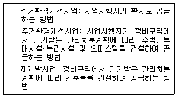
- ㄱ
- ㄴ
- ㄱ, ㄷ
- ㄴ, ㄷ
- ㄱ, ㄴ, ㄷ
(정답률: 31%)
65. 주택법령상 용어의 정의에 따를 때 '주택'에 해당하지 않는 것을 모두 고른 것은?
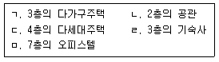
- ㄱ, ㄴ, ㄷ
- ㄱ, ㄹ, ㅁ
- ㄴ, ㄷ, ㄹ
- ㄴ, ㄹ, ㅁ
- ㄷ, ㄹ, ㅁ
(정답률: 38%)
66. 주택법령상 투기과열지구 및 조정대상지역에 관한 설명으로 옳은 것은?
- 국토교통부장관은 시·도별 주택보급률 또는 자가주택비율이 전국 평균을 초과하는 지역을 투기과열지구로 지정할 수 있다.
- 시·도지사는 주택의 분양·매매 등 거래가 위축될 우려가 있는 지역을 시·도 주거정책심의위원회의 심의를 거쳐 조정대상지역으로 지정할 수 있다.
- 투기과열지구의 지정기간은 3년으로 하되, 당해 지역 시장·군수·구청장의 의견을 들어 연장할 수 있다.
- 투기과열지구로 지정되면 지구 내 주택은 전매행위가 제한된다.
- 조정대상지역으로 지정된 지역의 시장·군수·구청장은 조정대상지역으로 유지할 필요가 없다고 판단되는 경우 국토교통부장관에게 그 지정의 해제를 요청할 수 있다.
(정답률: 27%)
67. 주택건설사업이 완료되어 사용검사가 있은 후에 甲이 주택단지 일부의 토지에 대해 소유권이전등기 말소소송에 따라 해당 토지의 소유권을 회복하게 되었다. 주택법령상 이에 관한 설명으로 옳은 것은?
- 주택의 소유자들은 甲에게 해당 토지를 공시지가로 매도할 것을 청구할 수 있다.
- 대표자를 선정하여 매도청구에 관한 소송을 하는 경우 대표자는 복리시설을 포함하여 주택의 소유자 전체의 4분의 3 이상의 동의를 받아 선정한다.
- 대표자를 선정하여 매도청구에 관한 소송을 하는 경우 그 판결은 대표자 선정에 동의하지 않은 주택의 소유자에게는 효력이 미치지 않는다.
- 甲이 소유권을 회복한 토지의 면적이 주택단지 전체 대지 면적의 5퍼센트를 넘는 경우에는 주택 소유자 전원의 동의가 있어야 매도청구를 할 수 있다.
- 甲이 해당 토지의 소유권을 회복한 날부터 1년이 경과한 이후에는 甲에게 매도청구를 할 수 없다.
(정답률: 19%)
68. 주택법령상 사업주체가 50세대의 주택과 주택 외의 시설을 동일 건축물로 건축하는 계획 및 임대주택의 건설·공급에 관한 사항을 포함한 사업계획승인신청서를 제출한 경우에 대한 설명으로 옳은 것은?
- 사업계획승인권자는 「국토의 계획 및 이용에 관한 법률」에 따른 건폐율 및 용적률을 완화하여 적용할 수 있다.
- 사업계획승인권자가 임대주택의 건설을 이유로 용적률을 완화하는 경우 사업주체는 완화된 용적률의 70퍼센트에 해당하는 면적을 임대주택으로 공급하여야 한다.
- 사업주체는 용적률의 완화로 건설되는 임대주택을 인수자에게 공급하여야 하며, 이 경우 시장·군수가 우선 인수할 수 있다.
- 사업주체가 임대주택을 인수자에게 공급하는 경우 임대주택의 부속토지의 공급가격은 공시지가로 한다.
- 인수자에게 공급하는 임대주택의 선정은 주택조합이 사업주체인 경우에는 조합원에게 공급하고 남은 주택을 대상으로 공개추첨의 방법에 의한다.
(정답률: 27%)
69. 주택법령상 국민주택 등에 관한 설명으로 옳은 것은?
- 민영주택이라도 국민주택규모 이하로 건축되는 경우 국민주택에 해당한다.
- 한국토지주택공사가 수도권에 건설한 주거전용면적이 1세대당 80제곱미터인 아파트는 국민주택에 해당한다.
- 지방자치단체의 재정으로부터 자금을 지원받아 건설되는 주택이 국민주택에 해당하려면 자금의 50퍼센트 이상을 지방자치단체로부터 지원받아야 한다.
- 다세대주택의 경우 주거전용면적은 건축물의 바닥면적에서 지하층 면적을 제외한 면적으로 한다.
- 아파트의 경우 복도, 계단 등 아파트 지상층에 있는 공용면적은 주거전용면적에 포함한다.
(정답률: 32%)
70. 주택법령상 지역주택조합에 관한 설명으로 옳은 것은?
- 조합설립에 동의한 조합원은 조합설립인가가 있은 이후에는 자신의 의사에 의해 조합을 탈퇴할 수 없다.
- 총회의 의결로 제명된 조합원은 조합에 자신이 부담한 비용의 환급을 청구할 수 없다.
- 조합임원의 선임을 의결하는 총회의 경우에는 조합원의 100분의 20 이상이 직접 출석하여야 한다.
- 조합원을 공개모집한 이후 조합원의 자격상실로 인한 결원을 충원하려면 시장·군수·구청장에게 신고하고 공개모집의 방법으로 조합원을 충원하여야 한다.
- 조합의 임원이 금고 이상의 실형을 받아 당연퇴직을 하면 그가 퇴직 전에 관여한 행위는 그 효력을 상실한다.
(정답률: 23%)
71. 주택법령상 주택건설사업에 대한 사업계획의 승인에 관한 설명으로 틀린 것은?
- 지역주택조합은 설립인가를 받은 날부터 2년 이내에 사업계획승인을 신청하여야 한다.
- 사업주체가 승인받은 사업계획에 따라 공사를 시작하려는 경우 사업계획승인권자에게 신고하여야 한다.
- 사업계획승인권자는 사업주체가 경매로 인하여 대지소유권을 상실한 경우에는 그 사업계획의 승인을 취소하여야 한다.
- 사업주체가 주택건설대지를 사용할 수 있는 권원을 확보한 경우에는 그 대지의 소유권을 확보하지 못한 경우에도 사업계획의 승인을 받을 수 있다.
- 주택조합이 승인받은 총사업비의 10퍼센트를 감액하는 변경을 하려면 변경승인을 받아야 한다.
(정답률: 28%)
72. 건축법령상 다중이용 건축물에 해당하는 용도가 아닌 것은? (단, 16층 이상의 건축물은 제외하고, 해당 용도로 쓰는 바닥면적의 합계는 5천제곱미터 이상임)
- 관광 휴게시설
- 판매시설
- 운수시설 중 여객용 시설
- 종교시설
- 의료시설 중 종합병원
(정답률: 35%)
73. 건축법령상 구조 안전 확인 건축물 중 건축주가 착공신고시 구조 안전 확인서류를 제출하여야 하는 건축물이 아닌 것은? (단, 건축법상 적용 제외 및 특례는 고려하지 않음)
- 단독주택
- 처마높이가 10미터인 건축물
- 기둥과 기둥 사이의 거리가 10미터인 건축물
- 연면적이 330제곱미터인 2층의 목구조 건축물
- 다세대주택
(정답률: 25%)
74. 건축법령상 건축신고를 하면 건축허가를 받은 것으로 볼 수 있는 경우에 해당하지 않는 것은?
- 연면적 150제곱미터인 3층 건축물의 피난계단 증설
- 연면적 180제곱미터인 2층 건축물의 대수선
- 연면적 270제곱미터인 3층 건축물의 방화벽 수선
- 1층 바닥면적 50제곱미터, 2층의 바닥면적 30제곱미터인 2층 건축물의 신축
- 바닥면적 100제곱미터인 단층 건축물의 신축
(정답률: 24%)
75. 건축주인 甲은 4층 건축물을 병원으로 사용하던 중 이를 서점으로 용도변경 하고자 한다. 건축법령상 이에 관한 설명으로 옳은 것은? (단, 다른 조건은 고려하지 않음)
- 甲이 용도변경을 위하여 건축물을 대수선할 경우 그 설계는 건축사가 아니어도 할 수 있다.
- 甲은 건축물의 용도를 서점으로 변경하려면 용도변경을 신고하여야 한다.
- 甲은 서점에 다른 용도를 추가하여 복수용도로 용도변경 신청을 할 수 없다.
- 甲의 병원이 준주거지역에 위치하고 있다면 서점으로 용도변경을 할 수 없다.
- 甲은 서점으로 용도변경을 할 경우 피난 용도로 쓸 수 있는 광장을 옥상에 설치하여야 한다.
(정답률: 27%)
76. 건축법령상 건축물 바닥면적의 산정방법에 관한 설명으로 틀린 것은?
- 벽·기둥의 구획이 없는 건축물은 그 지붕 끝부분으로부터 수평거리 1미터를 후퇴한 선으로 둘러싸인 수평투영면적으로 한다.
- 승강기탑은 바닥면적에 산입하지 아니한다.
- 필로티 부분은 공동주택의 경우에는 바닥면적에 산입한다.
- 공동주택으로서 지상층에 설치한 조경시설은 바닥면적에 산입하지 아니한다.
- 건축물의 노대의 바닥은 난간 등의 설치 여부에 관계없이 노대의 면적에서 노대가 접한 가장 긴 외벽에 접한 길이에 1.5미터를 곱한 값을 뺀 면적을 바닥면적에 산입한다.
(정답률: 34%)
77. 건축법령상 이행강제금을 산정하기 위하여 위반 내용에 따라 곱하는 비율을 높은 순서대로 나열한 것은? (단, 조례는 고려하지 않음)
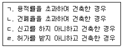
- ㄱ - ㄴ - ㄹ - ㄷ
- ㄱ - ㄹ - ㄷ - ㄴ
- ㄴ - ㄱ - ㄹ - ㄷ
- ㄹ - ㄱ - ㄴ - ㄷ
- ㄹ - ㄷ - ㄴ - ㄱ
(정답률: 31%)
78. 건축법령상 국토교통부장관이 정하여 고시하는 건축물, 건축설비 및 대지에 관한 범죄예방 기준에 따라 건축하여야 하는 건축물에 해당하지 않는 것은?
- 교육연구시설 중 학교
- 제1종근린생활시설 중 일용품을 판매하는 소매점
- 제2종근린생활시설 중 다중생활시설
- 숙박시설 중 다중생활시설
- 세대수가 300세대인 아파트
(정답률: 17%)
79. 농지법령상 농지 소유자가 소유 농지를 위탁경영할 수 없는 경우는?
- 「병역법」에 따라 현역으로 징집된 경우
- 6개월간 미국을 여행 중인 경우
- 선거에 따른 지방의회의원 취임으로 자경할 수 없는 경우
- 농업법인이 청산 중인 경우
- 교통사고로 2개월간 치료가 필요한 경우
(정답률: 29%)
80. 농지법령상 농지의 전용에 관한 설명으로 옳은 것은?
- 과수원인 토지를 재해로 인한 농작물의 피해를 방지하기 위한 방풍림 부지로 사용하는 것은 농지의 전용에 해당하지 않는다.
- 전용허가를 받은 농지의 위치를 동일 필지 안에서 변경하는 경우에는 농지전용신고를 하여야 한다.
- 산지전용허가를 받지 아니하고 불법으로 개간한 농지라도 이를 다시 산림으로 복구하려면 농지전용허가를 받아야 한다.
- 농지를 농업인 주택의 부지로 전용하려는 경우에는 농림축산식품부장관에게 농지전용신고를 하여야 한다.
- 농지전용신고를 하고 농지를 전용하는 경우에는 농지를 전·답·과수원 외의 지목으로 변경하지 못한다.
(정답률: 24%)
3과목: 임의구분
81. 공간정보의 구축 및 관리 등에 관한 법령상 지목과 지적도면에 등록하는 부호의 연결이 틀린 것을 모두 고른 것은?
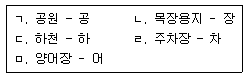
- ㄴ, ㄷ, ㅁ
- ㄴ, ㄹ, ㅁ
- ㄷ, ㄹ, ㅁ
- ㄱ, ㄴ, ㄷ, ㄹ
- ㄱ, ㄴ, ㄹ, ㅁ
(정답률: 34%)
82. 공간정보의 구축 및 관리 등에 관한 법령상 지상경계의 구분 및 결정기준 등에 관한 설명으로 틀린 것은?
- 토지의 지상경계는 둑, 담장이나 그 밖에 구획의 목표가 될 만한 구조물 및 경계점표지 등으로 구분한다.
- 지적소관청은 토지의 이동에 따라 지상경계를 새로 정한 경우에는 경계점 위치 설명도 등을 등록한 경계점좌표등록부를 작성·관리하여야 한다.
- 도시개발사업 등의 사업시행자가 사업지구의 경계를 결정하기 위하여 토지를 분할하려는 경우에는 지상경계점에 경계점 표지를 설치하여 측량할 수 있다.
- 토지가 수면에 접하는 경우 지상경계의 결정기준은 최대만수위가 되는 선으로 한다.
- 공유수면매립지의 토지 중 제방 등을 토지에 편입하여 등록하는 경우 지상경계의 결정기준은 바깥쪽 어깨부분으로 한다.
(정답률: 31%)
83. 공간정보의 구축 및 관리 등에 관한 법령상 지번의 구성 및 부여방법 등에 관한 설명으로 틀린 것은?
- 지번은 아라비아숫자로 표기하되, 임야대장 및 임야도에 등록하는 토지의 지번은 숫자 앞에 "산"자를 붙인다.
- 지번은 북서에서 남동으로 순차적으로 부여한다.
- 지번은 본번과 부번으로 구성하되, 본번과 부번 사이에 "-"표시로 연결한다.
- 지번은 국토교통부장관이 시·군·구별로 차례대로 부여한다.
- 분할의 경우에는 분할 후의 필지 중 1필지의 지번은 분할 전의 지번으로 하고, 나머지 필지의 지번은 본번의 최종 부번 다음 순번으로 부번을 부여한다.
(정답률: 36%)
84. 공간정보의 구축 및 관리 등에 관한 법령상 지적도의 축척에 해당하는 것을 모두 고른 것은?
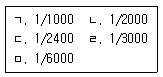
- ㄱ, ㄷ
- ㄱ, ㄴ, ㄷ
- ㄱ, ㄹ, ㅁ
- ㄴ, ㄹ, ㅁ
- ㄱ, ㄷ, ㄹ, ㅁ
(정답률: 34%)
85. 공간정보의 구축 및 관리 등에 관한 법령상 지목의 구분에 관한 설명으로 옳은 것은?
- 일반 공중의 보건·휴양 및 정서생활에 이용하기 위한 시설을 갖춘 토지로서 「국토의 계획 및 이용에 관한 법률」에 따라 공원 또는 녹지로 결정·고시된 토지는 "체육용지"로 한다.
- 온수·약수·석유류 등을 일정한 장소로 운송하는 송수관·송유관 및 저장시설의 부지는 "광천지"로 한다.
- 물을 상시적으로 직접 이용하여 연(蓮)·미나리·왕골 등의 식물을 주로 재배하는 토지는 "답"으로 한다.
- 해상에 인공으로 조성된 수산생물의 번식 또는 양식을 위한 시설을 갖춘 부지는 "양어장"으로 한다.
- 자연의 유수(流水)가 있거나 있을 것으로 예상되는 소규모 수로부지는 "하천"으로 한다.
(정답률: 35%)
86. 공간정보의 구축 및 관리 등에 관한 법령상 지적측량의 측량기간 및 검사기간에 관한 설명이다. ( ) 안에 들어갈 내용으로 옳은 것은? (단, 합의하여 따로 기간을 정하는 경우에는 제외함)
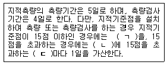
- ㄱ: 4일, ㄴ: 4일, ㄷ: 4점
- ㄱ: 4일, ㄴ: 5일, ㄷ: 5점
- ㄱ: 5일, ㄴ: 4일, ㄷ: 4점
- ㄱ: 5일, ㄴ: 5일, ㄷ: 4점
- ㄱ: 5일, ㄴ: 5일, ㄷ: 5점
(정답률: 33%)
87. 공간정보의 구축 및 관리 등에 관한 법령상 토지소유자의 정리 등에 관한 설명으로 틀린 것은?
- 지적소관청은 등기부에 적혀 있는 토지의 표시가 지적공부와 일치하지 아니하면 토지소유자를 정리할 수 없다.
- 「국유재산법]에 따른 총괄청이나 같은 법에 따른 중앙관서의 장이 소유자 없는 부동산에 대한 소유자 등록을 신청하는 경우 지적소관청은 지적공부에 해당 토지의 소유자가 등록되지 아니한 경우에만 등록할 수 있다.
- 지적공부에 신규등록하는 토지의 소유자에 관한 사항은 등기관서에서 등기한 것을 증명하는 등기필증, 등기완료통지서, 등기사항증명서 또는 등기관서에서 제공한 등기전산정보자료에 따라 정리한다.
- 지적소관청은 필요하다고 인정하는 경우에는 관할 등기관서의 등기부를 열람하여 지적공부와 부동산등기부가 일치하는지 여부를 조사·확인하여야 한다.
- 지적소관청 소속 공무원이 지적공부와 부동산등기부의 부합 여부를 확인하기 위하여 등기전산정보자료의 제공을 요청하는 경우 그 수수료는 무료로 한다.
(정답률: 26%)
88. 공간정보의 구축 및 관리 등에 관한 법령상 지적도면 등의 등록사항 등에 관한 설명으로 틀린 것은?
- 지적소관청은 지적도면의 관리에 필요한 경우에는 지번부여 지역마다 일람도와 지번색인표를 작성하여 갖춰 둘 수 있다.
- 지적도면의 축척은 지적도 7종, 임야도 2종으로 구분한다.
- 지적도면의 색인도, 건축물 및 구조물 등의 위치는 지적도면의 등록사항에 해당한다.
- 경계점좌표등록부를 갖춰 두는 지역의 임야도에는 해당 도면의 제명 끝에 "(좌표)"라고 표시하고, 도곽선의 오른쪽 아래 끝에 "이 도면에 의하여 측량을 할 수 없음"이라고 적어야 한다.
- 지적도면에는 지적소관청의 직인을 날인하여야 한다. 다만, 정보처리시스템을 이용하여 관리하는 지적도면의 경우에는 그러하지 아니하다.
(정답률: 26%)
89. 공간정보의 구축 및 관리 등에 관한 법령상 지적위원회 및 지적측량의 적부심사 등에 관한 설명으로 틀린 것은?
- 토지소유자, 이해관계인 또는 지적측량수행자는 지적측량성과에 대하여 다툼이 있는 경우에는 관할 시·도지사를 거쳐 지방지적위원회에 지적측량 적부심사를 청구할 수 있다.
- 지방지적위원회는 지적측량에 대한 적부심사 청구사항과 지적기술자의 징계요구에 관한 사항을 심의·의결한다.
- 시·도지사는 지방지적위원회의 의결서를 받은 날부터 7일 이내에 지적측량 적부심사 청구인 및 이해관계인에게 그 의결서를 통지하여야 한다.
- 시·도지사로부터 의결서를 받은 자가 지방지적위원회의 의결에 불복하는 경우에는 그 의결서를 받은 날부터 90일 이내에 국토교통부장관을 거쳐 중앙지적위원회에 재심사를 청구할 수 있다.
- 중앙지적위원회는 관계인을 출석하게 하여 의결을 들을 수 있으며, 필요하면 현지조사를 할 수 있다.
(정답률: 30%)
90. 공간정보의 구축 및 관리 등에 관한 법령상 지적서고의 설치기준 등에 관한 설명으로 틀린 것은?
- 지적서고는 지적사무를 처리하는 사무실과 연접하여 설치하여야 한다.
- 바닥과 벽은 2중으로 하고 영구적인 방수설비를 하여야 한다.
- 창문과 출입문은 2중으로 하되, 안쪽 문은 반드시 철제로 하고 바깥쪽 문은 곤충·쥐 등의 침입을 막을 수 있도록 철망 등을 설치하여야 한다.
- 온도 및 습도 자동조절장치를 설치하고, 연중 평균온도는 섭씨 20±5도를, 연중평균습도는 65±퍼센트를 유지하여야 한다.
- 전기시설을 설치하는 때에는 단독퓨즈를 설치하고 소화 장비를 갖춰 두어야 한다.
(정답률: 29%)
91. 공간정보의 구축 및 관리 등에 관한 법령상 공유지연명부와 대지권등록부의 공통된 등록사항을 모두 고른 것은?
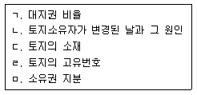
- ㄱ, ㄷ, ㄹ
- ㄱ, ㄷ, ㅁ
- ㄴ, ㄷ, ㄹ
- ㄱ, ㄴ, ㄹ, ㅁ
- ㄴ, ㄷ, ㄹ, ㅁ
(정답률: 30%)
92. 공간정보의 구축 및 관리 등에 관한 법령상 축척변경에 따른 청산금 등에 관한 설명으로 틀린 것은?
- 지적소관청은 청산금의 결정을 공고한 날부터 20일 이내에 토지소유자에게 청산금의 납부고지 또는 수령통지를 하여야 한다.
- 청산금의 납부고지를 받은 자는 그 고지를 받은 날부터 1년 이내에 청산금을 지적소관청에 내야 한다.
- 지적소관청은 청산금의 수령통지를 한 날부터 6개월 이내에 청산금을 지급하여야 한다.
- 지적소관청은 청산금을 지급받을 자가 행방불명 등으로 받을 수 없거나 받기를 거부할 때에는 그 청산금을 공탁할 수 있다.
- 수령통지된 청산금에 관하여 이의가 있는 자는 수령통지를 받은 날부터 1개월 이내에 지적소관청에 이의신청을 할 수 있다.
(정답률: 29%)
93. 소유권이전등기에 관한 설명으로 옳은 것을 모두 고른 것은? (다툼이 있으면 판례에 따름)
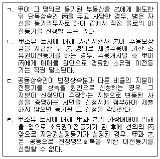
- ㄱ, ㄴ
- ㄱ, ㄹ
- ㄴ, ㄷ
- ㄷ, ㄹ
- ㄴ, ㄷ, ㄹ
(정답률: 25%)
94. 방문신청을 위한 등기신청서의 작성 및 제공에 관한 설명으로 틀린 것은?
- 등기신청서에는 신청인 또는 그 대리인이 기명날인하거나 서명하여야 한다.
- 신청서에 간인을 하는 경우, 등기권리자가 여러 명이고 등기의무자가 1명일 때에는 등기권리자 중 1명과 등기의무자가 간인하는 방법으로 한다.
- 신청서의 문자를 삭제한 경우에는 그 글자 수를 난외(欄外)에 적으며 문자의 앞뒤에 괄호를 붙이고 이에 서명하고 날인하여야 한다.
- 특별한 사정이 없는 한, 등기의 신청은 1건당 1개의 부동산에 관한 신청정보를 제공하는 방법으로 하여야 한다.
- 같은 채권의 담보를 위하여 여러 개의 부동산에 대한 저당권설정등기를 신청하는 경우, 부동산의 관할 등기소가 서로 다르면 1건의 신청정보로 일괄하여 등기를 신청할 수 없다.
(정답률: 21%)
95. 건축물대장에 甲 건물을 乙 건물에 합병하는 등록을 2018년 8월 1일에 한 후, 건물의 합병등기를 하고자 하는 경우에 관한 설명으로 틀린 것은?
- 乙 건물의 소유권의 등기명의인은 건축물대장상 건물의 합병등록이 있은 날로부터 1개월 이내에 건물합병등기를 신청하여야 한다.
- 건물합병등기를 신청할 의무있는 자가 그 등기신청을 게을리하였더라도, 「부동산등기법」상 과태료를 부과받지 아니한다.
- 합병등기를 신청하는 경우, 乙 건물의 변경 전과 변경 후의 표시에 관한 정보를 신청정보의 내용으로 등기소에 제공하여야 한다.
- 甲 건물에만 저당권등기가 존재하는 경우에 건물합병등기가 허용된다.
- 등기관이 합병제한 사유가 있음을 이유로 신청을 각하한 경우 지체 없이 그 사유를 건축물대장 소관청에 알려야 한다.
(정답률: 30%)
96. 등기신청의 각하사유에 해당하는 것을 모두 고른 것은?
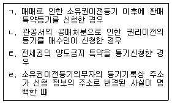
- ㄱ, ㄴ
- ㄴ, ㄷ
- ㄷ, ㄹ
- ㄱ, ㄴ, ㄷ
- ㄱ, ㄴ, ㄷ, ㄹ
(정답률: 25%)
97. 집합건물의 등기에 관한 설명으로 옳은 것은?
- 등기관이 구분건물의 대지권등기를 하는 경우에는 건축물대장 소관청의 촉탁으로 대지권의 목적인 토지의 등기기록에 소유권, 지역권, 전세권 또는 임차권이 대지권이라는 뜻을 기록하여야 한다.
- 구분건물로서 그 대지권의 변경이 있는 경우에는 구분건물의 소유권의 등기명의인은 1동의 건물에 속하는 다른 구분건물의 소유권의 등기명의인을 대위하여 대지권의 변경등기를 신청할 수 있다.
- '대지권에 대한 등기로서 효력이 있는 등기'와 '대지권의 목적인 토지의 등기기록 중 해당 구에 한 등기'의 순서는 순위번호에 따른다.
- 구분건물의 등기기록에 대지권이 등기된 후 건물만에 관해 저당권설정계약을 체결한 경우, 그 설정계약을 원인으로 구분건물만에 관한 저당권설정등기를 할 수 있다.
- 토지의 소유권이 대지권인 경우 토지의 등기기록에 대지권이라는 뜻의 등기가 되어 있더라도, 그 토지에 대한 새로운 저당권설정계약을 원인으로 하여, 그 토지의 등기기록에 저당권설정등기를 할 수 있다.
(정답률: 22%)
98. 말소등기를 신청하는 경우 그 말소에 관하여 승낙서를 첨부하여야 하는 등기상 이해관계 있는 제3자에 해당하는 것을 모두 고른 것은?
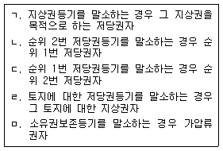
- ㄱ, ㄹ
- ㄱ, ㅁ
- ㄴ, ㄷ
- ㄴ, ㅁ
- ㄷ, ㄹ
(정답률: 28%)
99. 가등기에 관한 설명으로 틀린 것은? (다툼이 있으면 판례에 따름)
- 부동산임차권의 이전청구권을 보전하기 위한 가등기는 허용된다.
- 가등기에 기한 본등기를 금지하는 취지의 가처분등기는 할 수 없다.
- 가등기의무자도 가등기명의인의 승낙을 받아 단독으로 가등기의 말소를 청구할 수 있다.
- 사인증여로 인하여 발생한 소유권이전등기청구권을 보전하기 위한 가등기는 할 수 없다.
- 甲이 자신의 토지에 대해 乙에게 저당권설정청구권 보전을 위한 가등기를 해준 뒤 丙에게 그 토지에 대해 소유권이전등기를 했더라도 가등기에 기한 본등기 신청의 등기의무자는 甲이다.
(정답률: 24%)
100. 등기상 이해관계 있는 제3자가 있는 경우에 그 제3자의 승낙이 없으면 부기등기로 할 수 없는 것은?
- 환매특약등기
- 지상권의 이전등기
- 등기명의인표시의 변경등기
- 지상권 위에 설정한 저당권의 이전등기
- 근저당권에서 채권최고액 증액의 변경등기
(정답률: 24%)
101. 담보물권에 관한 등기에 대한 설명으로 옳은 것은?
- 민법상 조합 자체를 채무자로 표시하여 근저당설정등기를 할 수 없다.
- 근저당권의 존속기간은 등기할 수 없다.
- 채무자 변경을 원인으로 하는 저당권변경등기는 변경 전 채무자를 등기권리자로, 변경 후 채무자를 등기의무자로 하여 공동으로 신청한다.
- 근저당권설정등기 신청서에 변제기 및 이자를 기재하여야 한다.
- 민법상 저당권부 채권에 대한 질권을 설정함에 있어서 채권최고액은 등기할 수 없다.
(정답률: 23%)
102. 공동소유에 관한 등기에 대한 설명으로 옳은 것은?
- 합유등기에는 합유지분을 표시한다.
- 농지에 대하여 공유물분할을 원인으로 하는 소유권이전등기를 신청하는 경우, 농지취득자격증명을 첨부하여야 한다.
- 미등기 부동산의 공유자 중 1인은 자기 지분만에 대햐여 소유권보존등기를 신청할 수 있다.
- 갑구 순위번호 2번에 기록된 A의 공유지분 4분의 3 중 절반을 B에게 이전하는 경우, 등기목적란에 "2번 A 지분 4분의 3 중 일부(2분의 1)이전"으로 기록한다.
- 법인 아닌 사단 A 명의의 부동산에 관해 A와 B의 매매를 원인으로 이전등기를 신청하는 경우, 특별한 사정이 없는 한 A의 사원총회 결의가 있음을 증명하는 정보를 제출하여야 한다.
(정답률: 24%)
103. 소유권보존등기에 관한 설명으로 옳은 것은?
- 보존등기에는 등기원인과 그 연월일을 기록한다.
- 군수의 확인에 의하여 미등기 토지가 자기의 소유임을 증명하는 자는 보존등기를 신청할 수 있다.
- 등기관이 미등기 부동산에 관하여 과세관청의 촉탁에 따라 체납처분으로 인한 압류등기를 하기 위해서는 직권으로 소유권보존등기를 하여야 한다.
- 미등기 토지에 관한 소유권보존등기는 수용으로 인하여 소유권을 취득하였음을 증명하는 자도 신청할 수 있다.
- 소유권보존등기를 신청하는 경우 신청인은 등기소에 등기필정보를 제공하여야 한다.
(정답률: 20%)
104. 등기신청에 관한 설명으로 옳은 것은?
- 외국인은 「출입국관리법」에 따라 외국인등록을 하더라도 전산정보처리조직에 의한 사용자등록을 할 수 없으므로 전자신청을 할 수 없다.
- 법인 아닌 사단이 등기권리자로서 등기신청을 하는 경우, 그 대표자의 성명 및 주소를 증명하는 정보를 첨부정보로 제공하여야 하지만 주민등록번호를 제공할 필요는 없다.
- 이행판결에 의한 등기는 승소한 등기권리자 또는 패소한 등기의무자가 단독으로 신청한다.
- 신탁재산에 속하는 부동산의 신탁등기는 신탁자와 수탁자가 공동으로 신청하여야 한다.
- 전자표준양식에 의한 등기신청의 경우, 자격자대리인(법무사 등)이 아닌 자도 타인을 대리하여 등기를 신청할 수 있다.
(정답률: 18%)
1⑤. 국세기본법 및 지방세기본법상 조세채권과 일반채권의 관계에 관한 설명으로 틀린 것은?
- 납세담보물 매각 시 압류에 관계되는 조세채권은 담보 있는 조세채권보다 우선한다.
- 재산의 매각대금 배분 시 당해 재산에 부과된 종합부동산세는 당해 재산에 설정된 전세권에 따라 담보된 채권보다 우선한다.
- 취득세 신고서를 납세지 관할 지방자치단체장에게 제출한 날 전에 저당권 설정 등기 사실이 증명되는 재산을 매각하여 그 매각금액에서 취득세를 징수하는 경우, 저당권에 따라 담보된 채권은 취득세에 우선한다.
- 강제집행으로 부동산을 매각할 때 그 매각금액 중에 국세를 징수하는 경우, 강제집행 비용은 국세에 우선한다.
- 재산의 매각대금 배분 시 당해 재산에 부과된 재산세는 당해 재산에 설정된 저당권에 따라 담보된 채권보다 우선한다.
(정답률: 21%)
106. 거주자 甲은 A주택을 3년간 소유하며 직접 거주하고 있다. 甲이 A주택에 대하여 납부하게 되는 2918년 귀속 재산세와 종합부동산세에 관한 설명으로 틀린 것은? (단, 甲은 종합부동산세법상 납세의무자로서 만 61세이며 1세대 1주택자라 가정함)
- 재산세 및 종합부동산세의 과세기준일은 매년 6월 1일이다.
- 甲의 고령자 세액공제액은 종합부동산세법에 따라 산출된 세액에 100분의 10을 곱한 금액으로 한다.
- 재산세 납부세액이 600만원인 겨우, 100만원은 납부기한이 지난 날부터 2개월 이내에 분납할 수 있다.
- 재산세 산출세액은 지방세법령에 따라 계산한 직전 연도 해당 재산에 대한 재산세액 상당액의 100분의 150에 해당하는 금액을 한도로 한다.
- 만약 甲이 A주택을 「신탁법」에 따라 수탁자 명의로 신탁등기하게 하는 경우로서 A주택이 위탁자별로 구분된 재산이라면, 수탁자를 재산세 납세의무자로 본다.
(정답률: 15%)
107. 2018년 귀속 종합부동산세에 관한 설명으로 틀린 것은?
- 과세대상 토지가 매매로 유상이전 되는 경우로서 매매계약서 작성일이 2018년 6월 1일이고, 잔금지급 및 소유권이전등기일이 2018년 6월 29일인 경우, 종합부동산세의 납세의무자는 매도인이다.
- 납세의무자가 국내에 주소를 두고 있는 개인의 경우 납세지는 주소지이다.
- 납세자에게 부정행위가 없으며 특례제척기간에 해당하지 않는 경우, 원칙적으로 납세의무 성립일부터 5년이 지나면 종합부동산세를 부과할 수 없다.
- 납세의무자는 선택에 따라 신고·납부할 수 있으나, 신고를 함에 있어 납부세액을 과소하게 신고한 경우라도 과소신고가산세가 적용되지 않는다.
- 종합부동산세는 물납이 허용되지 않는다.
(정답률: 27%)
108. 지방세법상 재산세 종합합산과세대상 토지는? (문제 오류로 실제 시험에서는 3, 5번이 정답처리 되었습니다. 여기서는 3번을 누르면 정답 처리 됩니다.)
- 「문화재보호법」제2조 제2항에 따른 지정문화재 안의 임야
- 국가가 국방상의 목적 외에는 그 사용 및 처분 등을 제한하는 공장 구내의 토지
- 「건축법」 등 관계 법령에 따라 허가 등을 받아야 할 건축물로서 허가 등을 받지 아니한 공장용 건축물의 부속토지
- 「자연공원법」에 따라 지정된 공원자연환경지구의 임야
- 「개발제한구역의 지정 및 관리에 관한 특별조치법」에 따른 개발제한구역의 임야
(정답률: 27%)
109. 지방세법상 2018년도 귀속 재산세의 부고·징수에 관한 설명으로 틀린 것은? (단, 세액변경이나 수시부과사유는 없음)
- 토지분 재산세 납기는 매년 9월 16일부터 9월 30일까지이다.
- 선박분 재산세 납기는 매년 7월 16일부터 7월 31일까지이다.
- 재산세를 징수하려면 재산세 납세고지서를 납기개시 5일 전까지 발급하여야 한다.
- 주택분 재산세로서 해당 연도에 부과할 세액이 20만원 이하인 경우 9월 30일 납기로 한꺼번에 부과·징수한다.
- 재산세를 물납하려는 자는 납부기한 10일 전까지 납세지를 관할하는 시장·군수·구청장에게 물납을 신청하여야 한다.
(정답률: 28%)
110. 甲은 특수관계 없는 乙로부터 다음과 같은 내용으로 주택을 취득하였다. 취득세 과세표준 금액으로 옳은 것은?
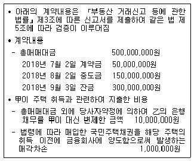
- 500,000,000원
- 501,000,000원
- 509,000,000원
- 510,000,000원
- 511,000,000원
(정답률: 27%)
111. 국세 및 지방세의 납세의무 성립시기에 관한 내용으로 옳은 것은? (단, 특별징수 및 수시부과와 무관함)
- 재산분 주민세: 매년 7월 1일
- 거주자의 양도소득에 대한 지방소득세: 매년 3월 31일
- 재산세에 부가되는 지방교육세: 매년 8월 1일
- 중간예납 하는 소득세: 매년 12월 31일
- 자동차 소유에 대한 자동차세: 납기가 있는 달의 10일
(정답률: 29%)
112. 지방세법상 과점주주의 간주취득세가 과세되는 경우가 아닌 것은 모두 몇 개인가? (단, 주식발행법인은 「자본시장과 금융투자업에 관한 법률 시행령」 제176조의 9 제1항에 따른 유가증권시장에 상장한 법인이 아니며, 「지방세특례제한법」은 고려하지 않음)
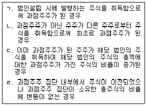
- 0개
- 1개
- 2개
- 3개
- 4개
(정답률: 25%)
113. 지방세법상 신탁(「신탁법」에 따른 신탁으로서 신탁등기가 병행되는 것임)으로 인한 신탁재산의 취득으로서 취득세를 부과하는 경우는 모두 몇 개인가?
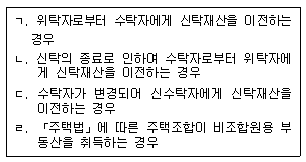
- 0개
- 1개
- 2개
- 3개
- 4개
(정답률: 23%)
114. 소득세법상 거주자의 양도소득과세표준 계산에 관한 설명으로 옳은 것은?
- 양도소득금액을 계산할 때 부동산을 취득할 수 있는 권리에서 발생한 양도차손은 토지에서 발생한 양도소득금액에서 공제할 수 없다.
- 양도차익을 실지거래가액에 의하는 경우 양도가액에서 공제할 취득가액은 그 자산에 대한 감가상각비로서 각 과세 기간의 사업소득금액을 계산하는 경우 필요경비에 산입한 금액이 있을 때에는 이를 공제하지 않은 금액으로 한다.
- 양도소득에 대한 과세표준은 종합소득 및 퇴직소득에 대한 과세표준과 구분하여 계산한다.
- 1세대 1주택 비과세 요건을 충족하는 고가주택의 양도 가액이 12억원이고 양도차익이 4억원인 경우 양도소득세가 과세되는 양도차익은 3억원이다.
- 2018년 4월 1일 이후 지출한 자본적지출액은 그 지출에 관한 증명서류를 수취·보관하지 않고 실제 지출 사실이 금융거래 증명서류에 의하여 확인되지 않는 경우에도 양도차익 계산 시 양도가액에서 공제할 수 있다.
(정답률: 26%)
115. 소득세법상 거주자의 양도소득세 신고 및 납부에 관한 설명으로 옳은 것은?
- 토지 또는 건물을 양도한 경우에는 그 양도일에 속하는 분기의 말일부터 2개월 이내에 양도소득과세표준을 신고해야 한다.
- 양도차익이 없거나 양도차손이 발생한 경우에는 양도소득과세표준 예정신고 의무가 없다.
- 건물을 신축하고 그 신축한 건물의 취득일부터 5년 이내에 해당 건물을 양도하는 경우로서 취득 당시의 실지 거래가액을 확인할 수 없어 환산가액을 그 취득가액으로 하는 경우에는 양도소득세 산출세액의 100분의 5에 해당하는 금액을 양도소득 결정세액에 더한다.
- 양도소득과세표준 예정신고 시에는 납부할 세액이 1천만원을 초과하더라도 그 납부할 세액의 일부를 분할납부할 수 없다.
- 당해 연도에 누진세율의 적용대상 자산에 대한 예정신고를 2회 이상 한 자가 법령에 따라 이미 신고한 양도소득금액과 합산하여 신고하지 아니한 경우 양도소득세 확정신고를 해야 한다.
(정답률: 22%)
116. 소득세법상 미등기양도자산에 관한 설명으로 옳은 것은?
- 미등기양도자산도 양도소득에 대한 소득세의 비과세에 관한 규정을 적용할 수 있다.
- 건설업자가 「도시개발법」에 따라 공사용역 대가로 취득한 체비지를 토지구획환지처분공고 전에 양도하는 토지는 미등기양도자산에 해당하지 않는다.
- 미등기양도자산의 양도소득금액 계산 시 양도소득 기본 공제를 적용할 수 있다.
- 미등기양도자산은 양도소득세 산출세액에 100분의 70을 곱한 금액을 양도소득 결정세액에 더한다.
- 미등기양도자산의 양도소득금액 계산 시 장기보유 특별공제를 적용할 수 있다.
(정답률: 24%)
117. 소득세법 시행령 제162조에서 규정하는 양도 또는 취득의 시기에 관한 내용으로 틀린 것은?
- 제1항 제4호: 자기가 건설한 건축물에 있어서 건축허가를 받지 아니하고 건축하는 건축물은 추후 사용승인 또는 임시사용승인을 받는 날
- 제1항 제3호: 기획재정부령이 정하는 장기할부조건의 경우에는 소유권이전등기(등록 및 명의개서를 포함)접수일·인도일 또는 사용수익일 중 빠른 날
- 제1항 제2호: 대금을 청산하기 전에 소유권이전등기(등록 및 명의개서를 포함)를 한 경우에는 등기부·등록부 또는 명부 등에 기재된 등기접수일
- 제1항 제5호: 상속에 의하여 취득한 자산에 대하여는 그 상속이 개시된 날
- 제1항 제9호: 「도시개발법」에 따른 환지처분으로 교부 받은 토지의 면적이 환지처분에 의한 권리면적보다 증가한 경우 그 증가된 면적의 토지에 대한 취득시기는 환지처분의 공고가 있은 날의 다음날
(정답률: 23%)
118. 다음은 소득세법 시행령 제155조 '1세대 1주택의 특례'에 관한 조문의 내용이다. 괄호 안에 들어갈 법령상의 숫자를 순서대로 옳게 나열한 것은?
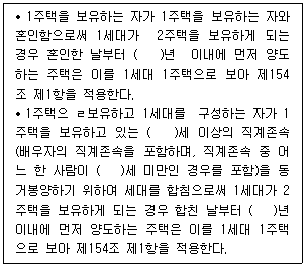
- 3, 55, 55, 5
- 3, 60, 60, 5
- 3, 60, 55, 10
- 5, 55, 55, 10
- 5, 60, 60, 10
(정답률: 26%)
119. 지방세법상 등록면허세가 과세되는 등록 또는 등기가 아닌 것은? (단, 2018년 1월 1일 이후 등록 또는 등기한 것으로 가정함)
- 광업권의 취득에 따른 등록
- 외국인 소유의 선박을 직접 사용하기 위하여 연부취득 조건으로 수입하는 선박의 등록
- 취득세 부과제척기간이 경과한 주택의 등기
- 취득가액이 50만원 이하인 차량의 등록
- 계약상의 잔금지급일을 2017년 12월 1일로 하는 부동산(취득가액 1억원)의 소유권이전등기
(정답률: 21%)
120. 甲이 乙소유 부동산에 관해 전세권설정등기를 하는 경우 지방세법상 등록에 대한 등록면허세에 관한 설명으로 틀린 것은?
- 등록면허세의 납세의무자는 전세권자인 甲이다.
- 부동산소재지와 乙의 주소지가 다른 경우 등록면허세의 납세지는 乙의 주소지로 한다.
- 전세권설정등기에 대한 등록면허세의 표준세율은 전세 금액의 1,000분의 2이다.
- 전세권설정등기에 대한 등록면허세의 산출세액이 건당 6천원보다 적을 때에는 등록면허세의 세액은 6천원으로 한다.
- 만약 丙이 甲으로부터 전세권을 이전받아 등기하는 경우라면 등록면허세의 납세의무자는 丙이다.
(정답률: 25%)